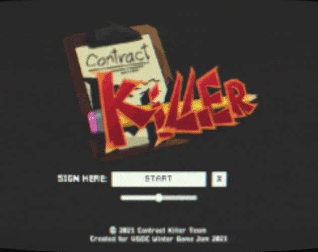

> Project: Contract Killer
Inspired by visuals of games like Paper Mario, and Streets of Rage, Contract Killer was developed for VGDC's Winter Game Jam 2021 with a team of 4 in just 1 week for the theme: "I didn't sign up for this." The game takes inspirations from the visuals of Paper Mario, and gameplay mechanics in the same vein of traditional Beat 'Em Up retro games. Defeat all the contracts, and make it to the boss who clipped you into this whole mess!
The game was developed with C#, Unity Game Engine, Piskel, and Blender. I worked primarily as one of the programmers on the team, focusing on gameplay mechanics and systems, and design within Unity.
The game is fully playable on itch.io, with a potential full release with additional content on Steam later this year!
You can play the game here!
See Project